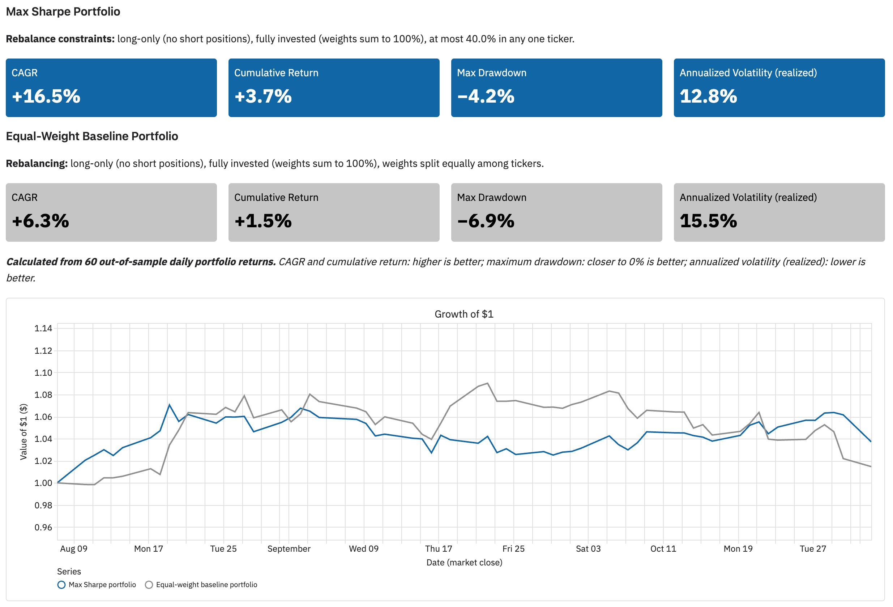
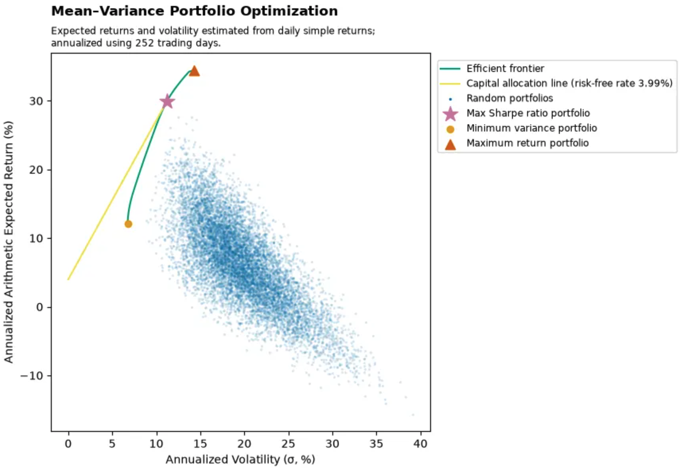
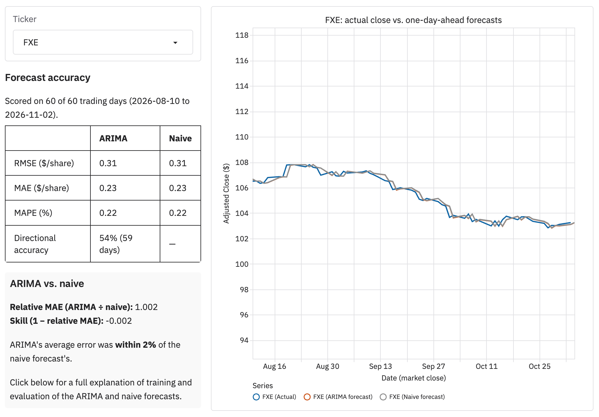

1. Project Overview
1.1 Objectives
This project investigates two related quantitative modeling problems:
Portfolio optimization: Can portfolio weights be optimized to maximize the Sharpe ratio, and does the resulting portfolio achieve better out-of-sample backtest performance than a naive equal-weight benchmark?
Time-series forecasting: Can short-horizon ARIMA forecasts of individual securities outperform a naive persistence benchmark under walk-forward evaluation?
In both analyses, model performance is evaluated out of sample against a simple naive benchmark. This provides a common standard for determining whether the additional modeling complexity introduced by optimization or statistical forecasting produces meaningful improvement over a straightforward baseline.
In contrast to my other published projects, which focus primarily on life sciences and renewable-energy applications, this project uses public, widely understood financial data. It is intended to showcase quantitative modeling in a setting where the methodology and results can be evaluated without specialized domain knowledge in biology or renewable energy. I am the sole contributor to the project, including the quantitative methodology, software development, analysis, testing, and presentation of results.
To jump directly to either analysis, select one of the following sections:
1.2 System Architecture
The system consists of two repositories: a computational backend and a lightweight frontend. The backend retrieves market data, performs portfolio optimization and ARIMA forecasting using multicore processing, and delivers results to an S3 bucket. The frontend retrieves and displays these results, with minimal computational requirements. A defined data interface specifies the files and schemas exchanged between the two components.
Implementation details are available in the backend system design documentation.
1.3 Data Sources
Stock market data is downloaded from the Massive.com API. Risk-free rate 3-month T-Bill data is downloaded from FRED (Federal Reserve Economic Data, maintained by the Federal Reserve Bank of St. Louis), series DTB3.
1.4 Reproducibility and Software Environment
Both the backend and frontend are written in Python. On the backend, data that is downloaded is cached for each NYSE trading day, and data that is generated by the backend is saved for each NYSE trading day. On the frontend, the UI presents the prominent opportunity to select results for any day in the uploaded datasets.
2. Portfolio Optimization
2.1 Introduction

To provide and analysis of a consistent snapshot of the calculations and UI, the data is as of November 2, 2026, with the backtest evaluation window being approximately the adjusted closes of the 61 days trading days prior to each out-of-sample evaluation day, and the optimization window being the adjusted closed of the 253 trading days prior to each optimization.
This project focuses on optimizing for maximum Sharpe ratio. This is compared to a naive baseline that allocates asset weights equally. The performance of each portoflio is evaluated with a 60-day out-of-sample backtest. In the backtest, each portfolio is rebalanced through optimization or equal weighting every 5 days, with the weights of each asset allowed to float between rebalancing. Note that the reblanacing does not account for taxes or other costs associated with rebalancing. At the end of the backtests, results are annualized and reported as KPIs. The backtest results are also used to plot the growth of $1 invested at the begining of the evaluation period. Results are seen in Figure 1.
The maximum Sharpe ratio portfolio is long-only (no short positions), fully invested (weights sum to 100%), and at most 40.0% in any one ticker. The equal-weight portfolio is long-only (no short positions), fully invested (weights sum to 100%), and equal weights for each ticker.
The KPIs are extrapolated from the 60-day backtest. CAGR (higher is better), cumulative return (higher is better), maximum drawdown (closer to 0% is better), and annualized volatility (realized) (lower is better.) For the data and backtest as of November 2, 2026, all of these metrics are better for the maximum Sharpe ratio portfolio, though these values can change daily, so if you look on the dashboard at live data, you may seen something different.
This project also computes portfolio allocations using optimization objectives of maximum return. See more details about these optimization below.
2.2 Methods
2.2.1 Portfolio Return, Variance, and Sharpe Ratio
Given vectors of asset weights and mean returns of those assets, the expected value of the portfolio’s return is given by Equation 1.
\[ E[R_p] = \mathbf{w}^{T}\boldsymbol{\mu} \tag{1}\]
Where:
- \(E[R_p]\) is the expected value of the portfolio return
- \(\mathbf{w}\) is the vector of asset weights
- \(\boldsymbol{\mu}\) is the vector of mean returns over the historical period used for the optimization
Given the vector of asset weights and covariance of those assets, the variance of portfolio returns is given by Equation 2.
\[ \sigma_p^2 = \mathbf{w}^{T}\Sigma\mathbf{w} \tag{2}\]
Where:
- \(\sigma_p^2\) is the portfolio variance
- \(\mathbf{w}\) is the vector of asset weights
- \(\Sigma\) is the covariance matrix of the assets
Once the variance is calculated, finding the volatility of the returns is easy: Take square root of the variance (the standard deviation) and multipley the standard deviation by 100 to obtain a percentage.
In addition to mean returns and return variance, another important concept is Sharpe ratio. The intuition is that the Sharpe ratio measures a portfolio’s risk-adjusted return by comparing its expected return above a risk-free benchmark to the volatility of its returns, with higher values indicating more excess return per unit of risk. In this case, the risk free return is that of the 3 month U.S. treasury bill on the date of interest. Higher Sharpe ratios are “better”. See Equation 3 for the calculation.
\[ S_p = \frac{E[R_p] - R_f}{\sigma_p} \tag{3}\]
2.2.2 Optimization: Maximum Sharpe Ratio
Let \(P_{t,i}\) be the adjusted close of asset \(i\) on trading day \(t\). Over a training window of \(T\) daily simple returns, expressed in percent,
\[ r_{t,i} = 100 \left( \frac{P_{t,i}}{P_{t-1,i}} - 1 \right), \qquad t = 1, \dots, T, \tag{4}\]
the mean daily return vector \(\boldsymbol{\mu}\) and the covariance matrix \(\boldsymbol{\Sigma}\) are the sample estimates
\[ \mu_i = \frac{1}{T} \sum_{t=1}^{T} r_{t,i}, \qquad \Sigma_{ij} = \frac{1}{T-1} \sum_{t=1}^{T} \left( r_{t,i} - \mu_i \right) \left( r_{t,j} - \mu_j \right). \tag{5}\]
The daily risk-free rate is \(r_f = r_{f,\text{ann}} / 252\), where \(r_{f,\text{ann}}\) is the 3-month U.S. Treasury bill rate (FRED series DTB3), annualized and in percent, from the last published observation before the optimization date.
The maximum Sharpe ratio (tangency) portfolio solves
\[ \max_{\mathbf{w} \in \mathbb{R}^n} \; S(\mathbf{w}) = \frac{\mathbf{w}^\top \boldsymbol{\mu} - r_f}{\sqrt{\mathbf{w}^\top \boldsymbol{\Sigma}\, \mathbf{w}}} \quad \text{subject to} \quad \sum_{i=1}^{n} w_i = 1, \qquad 0 \le w_i \le c \quad (i = 1, \dots, n), \tag{6}\]
with the same weight cap \(c\) as in Equation 11. The objective is the daily Sharpe ratio. The annualized Sharpe ratio reported with the results is
\[ S_{\text{ann}}(\mathbf{w}) = \sqrt{252}\; S(\mathbf{w}) = \frac{252\, \mathbf{w}^\top \boldsymbol{\mu} - r_{f,\text{ann}}}{\sqrt{252}\, \sqrt{\mathbf{w}^\top \boldsymbol{\Sigma}\, \mathbf{w}}}, \tag{7}\]
a positive multiple of \(S\), so both have the same maximizer \(\mathbf{w}^{*}\).
Unlike Equation 11, Equation 6 has no closed-form solution under the bounds, and its objective is not concave. It is solved numerically with sequential least squares programming (SLSQP, scipy.optimize.minimize), minimizing \(-S(\mathbf{w})\) from the equal-weight starting point \(w_i = 1/n\), with finite-difference gradients. SLSQP guarantees only a local optimum. However, on the region where \(\mathbf{w}^\top \boldsymbol{\mu} > r_f\), \(S\) is the ratio of an affine function to a positive convex function, so it is quasi-concave there. Over the convex feasible set, a local maximum with \(S > 0\) is therefore also a global maximum.
2.2.3 Optimization: Minimum Variance
The minimum variance portfolio solves
\[ \min_{\mathbf{w} \in \mathbb{R}^n} \; \mathbf{w}^\top \boldsymbol{\Sigma}\, \mathbf{w} \quad \text{subject to} \quad \sum_{i=1}^{n} w_i = 1, \qquad 0 \le w_i \le c \quad (i = 1, \dots, n), \tag{8}\]
with the covariance matrix \(\boldsymbol{\Sigma}\) of Equation 5 and the same weight cap \(c\) as in Equation 11. Unlike Equation 6, it depends only on \(\boldsymbol{\Sigma}\), not on the expected returns \(\boldsymbol{\mu}\) or the risk-free rate.
Without the bounds, the solution would have the closed form
\[ \mathbf{w}_{\text{GMV}} = \frac{\boldsymbol{\Sigma}^{-1} \mathbf{1}}{\mathbf{1}^\top \boldsymbol{\Sigma}^{-1} \mathbf{1}}, \tag{9}\]
but this can contain negative weights or weights above \(c\). When any bound binds, Equation 8 has no closed form. It is a convex quadratic program, and strictly convex when \(\boldsymbol{\Sigma}\) is positive definite, so it has a unique global minimum \(\mathbf{w}^{*}\). It is solved numerically with SLSQP (scipy.optimize.minimize), from the equal-weight starting point \(w_i = 1/n\), with finite-difference gradients.
The annualized (arithmetic) expected return and annualized volatility of the solution, in percent, are
\[ R_{\text{ann}} = 252\, \mathbf{w}^{*\top} \boldsymbol{\mu}, \qquad \sigma_{\text{ann}} = \sqrt{252}\, \sqrt{\mathbf{w}^{*\top} \boldsymbol{\Sigma}\, \mathbf{w}^{*}}, \tag{10}\]
which is the leftmost point of the efficient frontier.
2.2.4 Optimization: Maximum Return
Let \(n\) be the number of assets, \(\mu_i\) the estimated mean daily simple return of asset \(i\), and \(c\) the per-asset weight cap, where \(1/n \le c \le 1\). The maximum return portfolio solves the linear program
\[ \max_{\mathbf{w} \in \mathbb{R}^n} \; \mathbf{w}^\top \boldsymbol{\mu} \quad \text{subject to} \quad \sum_{i=1}^{n} w_i = 1, \qquad 0 \le w_i \le c \quad (i = 1, \dots, n). \tag{11}\]
Order the assets by decreasing mean return, \(\mu_{(1)} \ge \mu_{(2)} \ge \dots \ge \mu_{(n)}\), where \((j)\) denotes the asset with the \(j\)-th highest mean return. The solution fills the assets in that order, each up to the cap, until the budget is spent:
\[ w^{*}_{(j)} = \min\!\Big(c,\; \max\big(0,\; 1 - (j-1)\,c\big)\Big), \qquad j = 1, \dots, n. \tag{12}\]
Equivalently, with \(m = \lfloor 1/c \rfloor\), the \(m\) highest-return assets receive weight \(c\), the next receives the remainder \(1 - m\,c\) (which is zero when \(1/c\) is an integer), and all others receive zero:
\[ w^{*}_{(j)} = \begin{cases} c, & j \le m, \\ 1 - m\,c, & j = m + 1, \\ 0, & j > m + 1. \end{cases} \tag{13}\]
This solution is exact. Moving weight from a filled asset \((j)\) to any later asset \((k)\) with \(k > j\) changes the expected return by \(\delta\,(\mu_{(k)} - \mu_{(j)}) \le 0\) for a transfer of size \(\delta > 0\), so no feasible reallocation improves on Equation 12. When mean returns are tied, the optimal weights are not unique, but the optimal return is.
The annualized (arithmetic) expected return of this portfolio, in percent, is
\[ R^{*}_{\text{ann}} = 252 \sum_{i=1}^{n} w^{*}_i \, \mu_i , \tag{14}\]
which is the top end of the efficient frontier.
2.2.5 Efficient Frontier Calculation
Let \(\mathbf{w}_{\text{MV}}\) be the minimum variance portfolio (Equation 8) and \(\mathbf{w}^{*}\) the maximum return portfolio (Equation 12), with daily expected returns
\[ R_{\min} = \mathbf{w}_{\text{MV}}^\top \boldsymbol{\mu}, \qquad R_{\max} = \mathbf{w}^{*\top} \boldsymbol{\mu}. \tag{15}\]
The frontier is traced at \(K\) target daily returns, evenly spaced between them:
\[ R_k = R_{\min} + \frac{k-1}{K-1} \left( R_{\max} - R_{\min} \right), \qquad k = 1, \dots, K. \tag{16}\]
For each target, the frontier portfolio \(\mathbf{w}_k\) solves
\[ \min_{\mathbf{w} \in \mathbb{R}^n} \; \mathbf{w}^\top \boldsymbol{\Sigma}\, \mathbf{w} \quad \text{subject to} \quad \mathbf{w}^\top \boldsymbol{\mu} = R_k, \qquad \sum_{i=1}^{n} w_i = 1, \qquad 0 \le w_i \le c \quad (i = 1, \dots, n), \tag{17}\]
which is Equation 8 with one more linear equality constraint. Each is a convex quadratic program, strictly convex when \(\boldsymbol{\Sigma}\) is positive definite, so each feasible target has a unique global minimum. Each is solved with SLSQP (scipy.optimize.minimize) from the equal-weight starting point, with finite-difference gradients. A target for which the solver does not converge is recorded as missing rather than failing the run. In practice this can happen only near \(R_{\max}\), where the feasible set shrinks toward the single corner portfolio \(\mathbf{w}^{*}\).
Because the targets start at the minimum variance portfolio’s return, only the efficient (upper) branch of the minimum variance frontier is traced. For \(R_k \ge R_{\min}\), the equality \(\mathbf{w}^\top \boldsymbol{\mu} = R_k\) gives the same solution as the inequality \(\mathbf{w}^\top \boldsymbol{\mu} \ge R_k\).
Each frontier point is plotted at its annualized volatility and annualized (arithmetic) expected return, in percent:
\[ \left( \sigma_{\text{ann},k},\; R_{\text{ann},k} \right) = \left( \sqrt{252}\, \sqrt{\mathbf{w}_k^\top \boldsymbol{\Sigma}\, \mathbf{w}_k},\;\; 252\, R_k \right). \tag{18}\]
2.2.6 Capital Allocation Line Calculation
Let \(\mathbf{w}^{*}_{S}\) be the maximum Sharpe ratio portfolio (Equation 6), with annualized expected return, volatility, and Sharpe ratio
\[ R^{*}_{S} = 252\, \mathbf{w}^{*\top}_{S} \boldsymbol{\mu}, \qquad \sigma^{*}_{S} = \sqrt{252}\, \sqrt{\mathbf{w}^{*\top}_{S} \boldsymbol{\Sigma}\, \mathbf{w}^{*}_{S}}, \qquad S^{*}_{\text{ann}} = \frac{R^{*}_{S} - r_{f,\text{ann}}}{\sigma^{*}_{S}}. \tag{19}\]
Consider holding a fraction \(\alpha\) of wealth in this portfolio and \(1 - \alpha\) in the risk-free asset, which earns \(r_{f,\text{ann}}\) with zero volatility. The combination has annualized expected return and volatility
\[ R(\alpha) = (1 - \alpha)\, r_{f,\text{ann}} + \alpha\, R^{*}_{S}, \qquad \sigma(\alpha) = \alpha\, \sigma^{*}_{S}, \qquad 0 \le \alpha \le 1. \tag{20}\]
Eliminating \(\alpha\) gives the capital allocation line (CAL):
\[ R = r_{f,\text{ann}} + S^{*}_{\text{ann}}\, \sigma, \qquad 0 \le \sigma \le \sigma^{*}_{S}. \tag{21}\]
Its intercept is the annual risk-free rate, and its slope is the annualized maximum Sharpe ratio. The line is straight in these coordinates because returns and volatilities are annualized arithmetically (Equation 7). It is restricted to \(\alpha \le 1\), ending at the maximum Sharpe ratio portfolio, because \(\alpha > 1\) would require borrowing at the risk-free rate (leverage), which is outside the scope of this analysis.
Because \(\mathbf{w}^{*}_{S}\) maximizes the slope \(S_{\text{ann}}(\mathbf{w})\) from \((0, r_{f,\text{ann}})\) over all feasible portfolios, no feasible portfolio lies above the line: the CAL touches the feasible set, and the efficient frontier, at \(\mathbf{w}^{*}_{S}\).
For plotting, the line is sampled at \(J\) evenly spaced values of \(\alpha\):
\[ \alpha_j = \frac{j - 1}{J - 1}, \qquad \left( \sigma_j,\; R_j \right) = \left( \alpha_j\, \sigma^{*}_{S},\;\; (1 - \alpha_j)\, r_{f,\text{ann}} + \alpha_j\, R^{*}_{S} \right), \qquad j = 1, \dots, J. \tag{22}\]
2.2.7 Monte Carlo Portfolios
Let \(\Delta_n = \{ \mathbf{w} \in \mathbb{R}^n : \sum_i w_i = 1,\; w_i \ge 0 \}\) be the long-only, fully invested simplex, and
\[ \mathcal{C} = \{ \mathbf{w} \in \Delta_n : w_i \le c \;\; (i = 1, \dots, n) \} \tag{23}\]
the feasible set shared by Equation 11, Equation 6, Equation 8, and Equation 17.
The \(M\) random portfolios are drawn uniformly from \(\mathcal{C}\) by rejection sampling. Candidates are drawn from the flat Dirichlet distribution, which is uniform on \(\Delta_n\),
\[ \tilde{\mathbf{w}} \sim \operatorname{Dirichlet}(\mathbf{1}_n), \qquad p(\tilde{\mathbf{w}}) = (n-1)! \quad \text{for } \tilde{\mathbf{w}} \in \Delta_n, \tag{24}\]
and a candidate is accepted only if \(\max_i \tilde{w}_i \le c\). Because the proposal density is constant on \(\Delta_n\) and \(\mathcal{C} \subseteq \Delta_n\), the accepted portfolios \(\mathbf{w}^{(1)}, \dots, \mathbf{w}^{(M)}\) are independent and uniform on \(\mathcal{C}\). The draws use a fixed random seed, so they are reproducible. Each portfolio is plotted at its annualized volatility and annualized (arithmetic) expected return, in percent:
\[ \left( \sigma^{(m)},\; R^{(m)} \right) = \left( \sqrt{252}\, \sqrt{\mathbf{w}^{(m)\top} \boldsymbol{\Sigma}\, \mathbf{w}^{(m)}},\;\; 252\, \mathbf{w}^{(m)\top} \boldsymbol{\mu} \right), \qquad m = 1, \dots, M. \tag{25}\]
Where the cloud sits. \(\mathcal{C}\) is symmetric under permutations of the assets, so a uniform draw has \(\mathbb{E}[\mathbf{w}] = \tfrac{1}{n} \mathbf{1}_n\), with or without the cap. The cloud is therefore centered on the equal-weight portfolio:
\[ \mathbb{E}\big[ R^{(m)} \big] = \bar{R} = \frac{1}{n} \sum_{i=1}^{n} R_i, \qquad R_i = 252\, \mu_i . \tag{26}\]
Without the cap (\(c = 1\)), the Dirichlet moments \(\operatorname{Var}(w_i) = \frac{n-1}{n^2(n+1)}\) and \(\operatorname{Cov}(w_i, w_j) = -\frac{1}{n^2(n+1)}\) give the spread of the cloud’s returns:
\[ \operatorname{SD}\big( R^{(m)} \big) = \sqrt{ \frac{ \sum_{i=1}^{n} \left( R_i - \bar{R} \right)^2 }{ n\,(n+1) } }. \tag{27}\]
This is roughly the assets’ own cross-sectional spread divided by \(\sqrt{n+1}\), and a binding cap narrows it further. The efficient frontier’s high-return end, by contrast, consists of concentrated portfolios near the corners of \(\mathcal{C}\) (Equation 13), which have little volume under a uniform distribution when \(n\) is large. So the cloud illustrates the feasible region but does not fill it, and few draws come near the frontier.
Share near the frontier. Let \(\hat{f}(\sigma)\) be the efficient frontier’s return at volatility \(\sigma\), interpolated linearly between the reached points of Equation 18. Below the least volatile point it equals \(R_{\text{ann},1}\), and above the most volatile point it equals the highest frontier return. For a tolerance \(\tau\) in percentage points, the reported share is
2.2.8 Backtest Methodology
Index NYSE trading sessions by \(s\), and let \(t\) be the last session (the as-of date). The backtest has three settings: \(E\) scored sessions, \(T\) daily returns per training window, and a rebalance every \(H\) sessions, where \(H\) divides \(E\). In this section, daily simple returns are fractions, \(r_{s,i} = P_{s,i} / P_{s-1,i} - 1\); reported values are converted to percent.
Schedule. There are \(K = E / H\) rebalances, at the closes of
\[ \tau_k = t - E + (k - 1)\, H, \qquad k = 1, \dots, K, \tag{28}\]
so the first is at \(t - E\) and the last at \(t - H\). There is no rebalance at \(t\). Holding period \(k\) is the \(H\) sessions \(\tau_k + 1, \dots, \tau_k + H\). The holding periods are consecutive, do not overlap, and together cover the scored sessions \(t - E + 1, \dots, t\).
Max Sharpe ratio portfolio. At each rebalance, \(\boldsymbol{\mu}^{(k)}\) and \(\boldsymbol{\Sigma}^{(k)}\) are estimated as in Equation 5 from the \(T\) returns ending at the close of \(\tau_k\), that is, from the \(T + 1\) closes \(P_{\tau_k - T}, \dots, P_{\tau_k}\). The risk-free rate \(r_f^{(k)}\) is the last DTB3 observation dated strictly before \(\tau_k\), divided by 252. The target weights solve
\[ \mathbf{w}^{S}_{k} = \arg\max_{\mathbf{w} \in \mathcal{C}} \; \frac{\mathbf{w}^\top \boldsymbol{\mu}^{(k)} - r_f^{(k)}}{\sqrt{\mathbf{w}^\top \boldsymbol{\Sigma}^{(k)}\, \mathbf{w}}}, \tag{29}\]
which is Equation 6 on the feasible set Equation 23, solved with SLSQP. Every input ends at \(\tau_k\), before the first return of holding period \(k\), so there is no look-ahead. If the solver does not converge, or its weights violate the constraints, the fallback applies: \(\mathbf{w}^{S}_{k} = \mathbf{w}^{S}_{k-1}\), or \(\tfrac{1}{n}\mathbf{1}_n\) when \(k = 1\).
Equal-weight baseline. On the same dates, \(\mathbf{w}^{\text{EW}}_{k} = \tfrac{1}{n}\mathbf{1}_n\).
Holding and drift. Between rebalances, nothing is traded. For a portfolio with target weights \(\mathbf{w}_k\), the value of position \(i\) at the close of session \(s\) in holding period \(k\) is
\[ v_{s,i} = w_{k,i} \prod_{u = \tau_k + 1}^{s} \left( 1 + r_{u,i} \right), \qquad s = \tau_k + 1, \dots, \tau_k + H, \tag{30}\]
with \(v_{\tau_k, i} = w_{k,i}\). The portfolio’s daily return is
\[ r^{p}_{s} = \frac{\sum_i v_{s,i}}{\sum_i v_{s-1,i}} - 1 = \sum_{i=1}^{n} \tilde{w}_{s-1,i}\, r_{s,i}, \qquad \tilde{w}_{s-1,i} = \frac{v_{s-1,i}}{\sum_j v_{s-1,j}}, \tag{31}\]
where \(\tilde{\mathbf{w}}_{s-1}\) are the drifted weights. These satisfy the budget and long-only constraints, but can exceed the cap \(c\) between rebalances.
Wealth. Both portfolios start with $1 at the close of \(t - E\) and compound their \(E\) daily returns:
\[ W_{t-E} = 1, \qquad W_s = W_{s-1} \left( 1 + r^{p}_{s} \right), \qquad s = t - E + 1, \dots, t. \tag{32}\]
Metrics. For each portfolio, in percent:
\[ \begin{aligned} \text{Cumulative return} &= 100 \left( W_t - 1 \right), \\ \text{CAGR} &= 100 \left( W_t^{\,252 / E} - 1 \right), \\ \text{Maximum drawdown} &= 100 \min_{t - E \le s \le t} \left( \frac{W_s}{\max_{t - E \le u \le s} W_u} - 1 \right), \\ \text{Annualized volatility (realized)} &= 100 \sqrt{252}\; \sqrt{ \frac{1}{E - 1} \sum_{s = t - E + 1}^{t} \left( r^{p}_{s} - \bar{r}^{p} \right)^2 }, \end{aligned} \tag{33}\]
where \(\bar{r}^{p}\) is the mean of the \(E\) daily returns. CAGR is compounded, unlike the arithmetic annualization of Equation 7. The initial $1 counts toward the running peak in the drawdown.
Live portfolio. One more optimization, Equation 29 at \(\tau = t\) with the same \(T\) and the same risk-free rule, gives the current maximum Sharpe ratio portfolio. It is the portfolio reported by the optimization, and it holds nothing in the backtest (see Figure 2).
\[ \text{share}_\tau = \frac{1}{M} \sum_{m=1}^{M} \mathbb{1}\!\left[ \hat{f}\big(\sigma^{(m)}\big) - R^{(m)} \le \tau \right]. \tag{34}\]
The true frontier is concave in \((\sigma, R)\), so the chords of \(\hat{f}\) lie on or below it, and Equation 34 can only overstate the share.
2.3 Results
Still using results as of November 2, 2026, let’s dive into the each portfolio optimization to see how they compare.
Table 1 shows the performane of individual tickers annualized with the same method as other results in this study. No optimization allowed more than 40.0% in any one ticker, so a single ticker is not a feasible portfolio. This table shows which tickers pull the random portfolios and the frontier toward higher or lower return and volatility.
| Ticker | Annualized return (%) | Annualized volatility (\(\sigma\), %) |
|---|---|---|
| XLE | 45.58 | 22.58 |
| XBI | 34.88 | 29.14 |
| VXUS | 11.37 | 17.23 |
| VOO | 10.86 | 12.79 |
| QQQ | 10.48 | 20.27 |
| NVDA | 6.50 | 37.32 |
| GLD | 1.78 | 28.55 |
| FXE | -3.16 | 5.41 |
| IBIT | -23.10 | 44.87 |
| ETHA | -30.37 | 62.31 |
Optimizing each portfolio with different objective functions yields a different selection of assets with differing weights, as listed in Table 2. Each objective function selected 3 to 4 weights and distributed them differently. A few observations according to each objective function are listed below. While the objective functions differ, all optimizations obey the same constraints: long positions only, all weights sum to 100%, and no more than 40% in any single ticker.
Max Sharpe ratio objective This objective function selected 3 assets: XLE, VOO, and XBI (ETFs representing the energy sector, S&P 500, and biotech) with approximate weights of 40%, 38%, and 22% respectively. Of the three objectives, this portfolio has the most even distribution of weights among its selected assets.
Minimum variance objective This objective selected 4 assets XLE, VOO, XBI, and FXE (ETFs representing the energy sector, S&P 500, biotech sector, EUR/USD exchange) with approximate weights of 19%, 40%, 1%, and 40%, respectively. Like the Max Sharpe objective, it drops assets that are wildly volatile or negative/weakly positive returns.
Maximum return objective This optimization took the most risks by concentrating its allocations in XLE, XBI, and VXUS (ETFs for the energy and biotech sectors and stock markets outside the U.S.)
All optimizations selected the energy sector, and 2 optimization selected the biotech sector (at least to a significant extent). All 3 objectives dropped assets that are wildly volatile or negative/weakly positive returns.
Table 2 lists the weights of each asset in portfolios optimized according to the opjective function in the column name.
| Ticker | Max Sharpe Weight | Min Variance Weight | Max Return Weight |
|---|---|---|---|
| XLE | 40.00% | 19.24% | 40.00% |
| VOO | 38.28% | 40.00% | 0.00% |
| XBI | 21.72% | 0.76% | 40.00% |
| FXE | 0.00% | 40.00% | 0.00% |
| VXUS | 0.00% | 0.00% | 20.00% |
| ETHA | 0.00% | 0.00% | 0.00% |
| GLD | 0.00% | 0.00% | 0.00% |
| IBIT | 0.00% | 0.00% | 0.00% |
| NVDA | 0.00% | 0.00% | 0.00% |
| QQQ | 0.00% | 0.00% | 0.00% |

In Figure 2 the random portfolios illustrate the feasible risk–return combinations generated by different portfolio weights. The efficient frontier traces the upper boundary of this feasible set, from the minimum-variance portfolio to the maximum-return portfolio, and represents portfolios that maximize expected return for a given level of volatility. Portfolios below and to the right of the frontier are mean–variance inefficient because another feasible portfolio offers higher expected return for the same risk, lower risk for the same expected return, or both.
In Figure 2 the capital allocation line begins at the risk-free rate and is tangent to the efficient frontier at the maximum-Sharpe-ratio portfolio. Its slope is the Sharpe ratio, so the tangency portfolio provides the greatest expected excess return per unit of volatility among the risky portfolios considered. Investors able to combine the risk-free asset with the risky portfolio can therefore move along this line to select different overall risk levels while retaining the same optimal risky-asset portfolio.
2.4 Discussion
3. Time-Series Forecasting
3.1 Introduction

As with the portfolio optimization, to provide an analysis of a consistent snapshot of the calculations and UI, the data is as of November 2, 2026. The goal of this part of the project is the following:
Walk-forward training of ARIMA models, based on 252 trading days of adjusted close data, and using these models to predict the out-of-sample adjusted close 1 day ahead of the training window.
Compare these trained ARIMA models to a baseline/naive persistence forecast that assumes the next day’s adjusted close price is equal the current day.
Calculate performance metrics for both ARIMA and naive model to determine if the ARIMA model beat the naive forecast.
3.2 Methods
3.2.1 Walk-Forward ARIMA Training and Out-of-Sample Forecasting
Let \(t\) be the last session in the data (the as-of date), \(L\) the number of log returns in each training window, and \(E\) the number of scored sessions. The procedure uses the \(L + E + 1\) most recent closes of each ticker, \(P_{t-L-E}, \dots, P_t\).
Forecast origins. There are \(E + 1\) training windows, one per forecast origin
\[ \tau_j = t - E + j, \qquad j = 0, 1, \dots, E. \tag{35}\]
Window \(j\) holds the \(L + 1\) closes \(P_{\tau_j - L}, \dots, P_{\tau_j}\), that is, the \(L\) log returns \(y_{\tau_j - L + 1}, \dots, y_{\tau_j}\) (Equation 37), and produces a one-step-ahead forecast of the close on session \(\tau_j + 1\). Consecutive windows overlap in all but one observation: each slides forward by one session.
- For \(j = 0, \dots, E - 1\), the forecast session \(\tau_j + 1 \in \{ t - E + 1, \dots, t \}\) has an actual close. These \(E\) forecasts are the out-of-sample backtest scored in Equation 43, over the same sessions as the portfolio backtest (Equation 28).
- For \(j = E\), the forecast session is \(t + 1\), the next trading day, whose close is not yet known. This is the live forecast, and it is never scored.
Procedure. For each ticker and each origin \(\tau_j\), independently:
- Compute the \(L\) log returns of window \(j\). They end at the close of \(\tau_j\), so nothing from session \(\tau_j + 1\) or later is used.
- Fit every candidate in \(\mathcal{O}\) (Equation 38) on the whole window by maximum likelihood (Equation 39).
- Select \((p^{*}_j, q^{*}_j)\) by Equation 41. The order is re-selected for every window and ticker, so it can change from one forecast to the next.
- Forecast with the selected model, already fit in step 2:
\[ \hat{P}^{A}_{\tau_j + 1} = P_{\tau_j} \exp\!\big( \hat{y}_{\tau_j + 1 \mid \tau_j} \big), \qquad \hat{P}^{N}_{\tau_j + 1} = P_{\tau_j}, \tag{36}\]
where \(\hat{y}_{\tau_j + 1 \mid \tau_j}\) is the conditional mean of the next log return given window \(j\) (Equation 42).
Every parameter estimate, order choice, and forecast for session \(\tau_j + 1\) depends only on closes up to \(\tau_j\), so the backtest has no look-ahead. Each window is fit from scratch: no parameters or orders are carried over from the previous window. The \((E + 1) \times n\) fits are therefore independent, and can be computed in parallel without changing the result.
Calendar. Sessions are NYSE trading days. A window holds consecutive sessions, so one model time step is one trading session: weekends and exchange holidays are skipped, not treated as missing observations.
Missing data. Windows are built from the sessions actually present in the data. If a whole session is missing, no window ends on it, so there is no forecast for the session after it. If only one ticker’s close at the origin \(\tau_j\) is missing, that ticker’s ARIMA forecast for \(\tau_j + 1\) is left empty rather than replaced with a two-step-ahead forecast from an older close. Its naive forecast uses the most recent observed close. Such sessions drop out of \(\mathcal{D}\) in Equation 43 for both models.
3.2.2 Selecting ARIMA Order
Let \(P_{s}\) be the adjusted close of one ticker on NYSE session \(s\), and
\[ y_s = \ln P_s - \ln P_{s-1} \tag{37}\]
its daily log return. To forecast session \(\tau + 1\), a model is fit on the \(L\) log returns ending at the close of \(\tau\), that is, \(y_{\tau - L + 1}, \dots, y_{\tau}\), computed from the \(L + 1\) closes \(P_{\tau - L}, \dots, P_{\tau}\). The window slides forward one session for each forecast, so each forecast uses only data available before the session it predicts.
Candidate models. For each order \((p, q)\) in the candidate set
\[ \mathcal{O} = \{ (p, q) : p \in \{0, \dots, \bar{p}\},\; q \in \{0, \dots, \bar{q}\} \} \setminus \{(0, 0)\}, \tag{38}\]
the log returns are modeled as a constant mean plus a stationary, invertible ARMA(\(p\), \(q\)) process with Gaussian innovations:
\[ y_s = m + u_s, \qquad u_s = \sum_{j=1}^{p} \phi_j\, u_{s-j} + \varepsilon_s + \sum_{j=1}^{q} \theta_j\, \varepsilon_{s-j}, \qquad \varepsilon_s \overset{\text{iid}}{\sim} \mathcal{N}(0, \sigma^2). \tag{39}\]
This is ARIMA(\(p\), 0, \(q\)) on log returns, which is ARIMA(\(p\), 1, \(q\)) on log prices. The constant \(m\) is the drift: the expected daily log return. The parameters \(\boldsymbol{\vartheta}_{pq} = (m, \phi_1, \dots, \phi_p, \theta_1, \dots, \theta_q, \sigma^2)\) are estimated by exact Gaussian maximum likelihood, with the likelihood evaluated by the Kalman filter.
Order selection. Each candidate is fit once on the whole window, and scored by the Bayesian information criterion
\[ \operatorname{BIC}(p, q) = -2 \ln \hat{\mathcal{L}}_{pq} + k_{pq} \ln L, \qquad k_{pq} = p + q + 2, \tag{40}\]
where \(\hat{\mathcal{L}}_{pq}\) is the maximized likelihood, and \(k_{pq}\) counts the AR and MA coefficients, the mean \(m\), and the innovation variance \(\sigma^2\). A candidate whose fit fails is assigned \(\operatorname{BIC} = +\infty\). The selected order minimizes the BIC, with exact ties broken lexicographically by fewer parameters, then by lower \(p\):
\[ (p^{*}, q^{*}) = \operatorname*{arg\,min}_{(p, q) \in \mathcal{O}} \; \big( \operatorname{BIC}(p, q),\; p + q,\; p \big). \tag{41}\]
If every candidate’s fit fails, the run fails instead of producing a forecast.
Forecast. The selected model, already fit during selection and not refit, gives the one-step-ahead conditional mean of the next log return, \(\hat{y}_{\tau+1} = \mathbb{E}\left[ y_{\tau+1} \mid y_{\tau - L + 1}, \dots, y_{\tau} \right]\), which is converted to a price forecast:
\[ \hat{P}^{\text{ARIMA}}_{\tau+1} = P_{\tau} \exp\!\left( \hat{y}_{\tau+1} \right), \qquad \hat{P}^{\text{naive}}_{\tau+1} = P_{\tau}. \tag{42}\]
The naive (random walk) forecast uses the same last close, so the two are directly comparable. Under Equation 39, \(P_\tau \exp(\hat{y}_{\tau+1})\) is the conditional median of \(P_{\tau+1}\), not its conditional mean, which would include a factor \(\exp(\hat{\sigma}^2_{\tau+1} / 2)\), where \(\hat{\sigma}^2_{\tau+1}\) is the one-step forecast variance.
3.2.3 Performance Metrics and Comparison With Naive Persistence Baseline
For one ticker, let \(\hat{P}^{A}_{s}\) be the ARIMA forecast and \(\hat{P}^{N}_{s}\) the naive forecast of the close on session \(s\) (Equation 42), and \(P_s\) the actual close. Let \(\mathcal{D}_0\) be the \(E\) most recent sessions with an actual close. The live forecast, which has no actual close yet, is never scored. The scored set \(\mathcal{D} \subseteq \mathcal{D}_0\) keeps the sessions on which both forecasts exist, so both models are always scored on exactly the same days:
\[ \mathcal{D} = \{ s \in \mathcal{D}_0 : \hat{P}^{A}_{s} \text{ and } \hat{P}^{N}_{s} \text{ are available} \}, \qquad |\mathcal{D}| = n_{\text{eval}} \le E. \tag{43}\]
With complete data, \(n_{\text{eval}} = E\). For a model \(M \in \{A, N\}\), the forecast error is \(e^{M}_{s} = \hat{P}^{M}_{s} - P_s\), in US dollars per share.
Error metrics. For each model:
\[ \begin{aligned} \operatorname{RMSE}_M &= \sqrt{ \frac{1}{n_{\text{eval}}} \sum_{s \in \mathcal{D}} \left( e^{M}_{s} \right)^2 }, \\ \operatorname{MAE}_M &= \frac{1}{n_{\text{eval}}} \sum_{s \in \mathcal{D}} \left| e^{M}_{s} \right|, \\ \operatorname{MAPE}_M &= \frac{100}{n_{\text{eval}}} \sum_{s \in \mathcal{D}} \frac{\left| e^{M}_{s} \right|}{P_s}. \end{aligned} \tag{44}\]
RMSE and MAE are in dollars per share, so they cannot be compared across tickers with different price levels. MAPE is in percent and scale-free.
Comparison with the naive forecast. The ARIMA forecast is judged against the naive (persistence, or random walk) forecast \(\hat{P}^{N}_{s} = P_{s-1}\), the most recent observed close:
\[ \operatorname{relMAE} = \frac{\operatorname{MAE}_A}{\operatorname{MAE}_N}, \qquad \operatorname{Skill} = 1 - \operatorname{relMAE}. \tag{45}\]
\(\operatorname{relMAE} < 1\), equivalently \(\operatorname{Skill} > 0\), means ARIMA’s errors were smaller than the naive forecast’s on the same days. \(\operatorname{relMAE}\) is undefined when \(\operatorname{MAE}_N = 0\). This ratio of out-of-sample errors is related to, but is not, Hyndman and Koehler’s MASE, which scales by the naive forecast’s in-sample error.
Directional accuracy. The ARIMA forecast’s predicted move from the last close is compared with the actual move, over the sessions on which the price actually moved:
\[ \mathcal{D}_{\pm} = \{ s \in \mathcal{D} : P_s \ne \hat{P}^{N}_{s} \}, \qquad \operatorname{DA}_A = \frac{1}{|\mathcal{D}_{\pm}|} \sum_{s \in \mathcal{D}_{\pm}} \mathbb{1}\!\left[ \operatorname{sgn}\!\big( \hat{P}^{A}_{s} - \hat{P}^{N}_{s} \big) = \operatorname{sgn}\!\big( P_s - \hat{P}^{N}_{s} \big) \right]. \tag{46}\]
A forecast of no move counts as incorrect. The naive forecast always predicts no move, so it has no directional accuracy.
Interpreting the comparison with the naive forecast. The persistence forecast is the natural benchmark for daily prices. If log prices follow a random walk, or more generally a martingale, then \(P_{s-1}\) is already the best forecast of \(P_s\) under squared error, up to a negligible drift term, and no model fit on past prices can be expected to beat it out of sample. The question these metrics answer is therefore whether ARIMA’s estimated drift and short-term autocorrelation improved on persistence, not whether ARIMA forecasts prices well in absolute terms. Four cautions apply:
- The two forecasts are nearly identical. By Equation 42, \(\hat{P}^{A}_{s} = \hat{P}^{N}_{s} \exp(\hat{y}_{s})\), and \(\hat{y}_s\) is a small fraction of a typical daily move. Both forecasts’ errors are dominated by the same unpredictable price change \(P_s - P_{s-1}\), so \(\operatorname{relMAE}\) is expected to be close to 1, and a small deviation from 1 is not, on its own, evidence of forecasting skill.
- The sample is small and the errors are dependent. \(n_{\text{eval}}\) is modest, and consecutive forecasts come from overlapping training windows, so the effective sample is smaller still. No formal test of equal accuracy (such as the Diebold–Mariano test) is applied, so the metrics should be read as descriptive.
- Directional accuracy has a base rate. A model with positive estimated drift predicts an up move on most days, so its \(\operatorname{DA}_A\) is close to the share of up days in \(\mathcal{D}_{\pm}\). Compare it with that share, not with 0.5.
- Metrics are computed one ticker at a time. Ten tickers scored at once will show some apparent skill by chance alone.
3.3 Results and Discussion
While I saw some success with the portfolio optimization, the time series forecasting with ARIMA was not as successful, with the best ARIMA mean absolute error (MAE) scores approximately tying with the naive model.
The candidate orders. The search over \(\mathcal{O}\) (Equation 38) is deliberately small. Daily log returns of liquid assets have little linear autocorrelation, so a low-order model is the appropriate starting point, and a larger search mainly adds estimation noise and more opportunities to overfit.
When \((1, 1) \in \mathcal{O}\), one identification issue applies. The ARMA(1,1) component of Equation 39 is
\[ (1 - \phi L)\, u_s = (1 + \theta L)\, \varepsilon_s, \tag{47}\]
where \(L\) is the lag operator. If \(\theta = -\phi\), the two factors cancel and \(u_s = \varepsilon_s\) is white noise for every value of \(\phi\). When the data are close to white noise, as daily returns typically are, the likelihood is nearly flat along the ridge \(\theta \approx -\phi\). The fitted \((\hat{\phi}, \hat{\theta})\) can then be large and of opposite sign while describing a process with almost no autocorrelation, and they can change substantially between overlapping windows. Their one-step forecasts remain close to the drift \(m\), so the point forecasts are less affected than the coefficients. Individual ARMA(1,1) coefficient estimates should not be interpreted as evidence of strong dynamics.
BIC is used rather than AIC because it penalizes additional parameters more heavily. The two criteria are
\[ \operatorname{AIC}(p, q) = -2 \ln \hat{\mathcal{L}}_{pq} + 2\, k_{pq}, \qquad \operatorname{BIC}(p, q) = -2 \ln \hat{\mathcal{L}}_{pq} + k_{pq} \ln L, \tag{48}\]
so BIC’s penalty per parameter exceeds AIC’s whenever \(\ln L > 2\), that is, for any window of more than seven returns. BIC is also consistent: if the true order is in the candidate set, the probability of selecting it tends to 1 as \(L \to \infty\), whereas AIC tends to select orders that are too large. In a weak-signal setting, a stronger penalty favors the more parsimonious model, which is usually the better forecaster.
The evaluation sample. All accuracy metrics are computed over one evaluation window of \(E\) sessions, ending on the as-of date. They describe one recent period, not the models’ long-run behavior. Two kinds of dependence make the effective sample smaller than \(n_{\text{eval}}\).
- Over time. Consecutive training windows share all but one observation, so consecutive ARIMA forecasts adjust the naive forecast by similar amounts. The per-session loss differential between the two models, \[ d_s = \left| e^{A}_{s} \right| - \left| e^{N}_{s} \right|, \qquad \operatorname{MAE}_A - \operatorname{MAE}_N = \frac{1}{n_{\text{eval}}} \sum_{s \in \mathcal{D}} d_s, \tag{49}\] can therefore be autocorrelated, and volatility clustering makes the magnitudes of \(d_s\) persistent. For a stationary series with autocorrelations \(\rho_k\), the variance of a mean of \(n\) observations corresponds to an effective sample size of \[ n_{\text{eff}} = \frac{n}{1 + 2 \sum_{k=1}^{n-1} \left( 1 - \frac{k}{n} \right) \rho_k}, \tag{50}\] which is smaller than \(n\) when the \(\rho_k\) are positive.
- Across tickers. The tickers’ returns are correlated on the same days, and several are broad equity funds with overlapping holdings. The per-ticker metrics are therefore not independent replications. Apparent skill on several tickers at once can reflect one common market move.
Results from different as-of dates are not independent either. Evaluation windows from consecutive runs overlap in all but a few sessions, so comparing many dates does not add many independent observations. When the training window length or \(E\) differs between runs, as recorded in each run’s metadata, their metrics are computed on different samples and are not directly comparable.
Data caveats.
- Hindsight universe. The tickers are a fixed set chosen at the time of writing. Assets that were delisted, or that would not have been chosen at the start of the period, are absent, so results may not generalize to other assets.
- Adjusted prices and dividends. Prices are adjusted closes as returned by Massive.com. They are not assumed to include dividend adjustments. If they do not, the log returns in Equation 37 are price returns, and each ex-dividend date appears as a negative return. That return is predictable from the dividend calendar but not from past prices, so it adds to the forecast errors of both models alike. Adjusted prices can also be revised retroactively when a split or distribution occurs, so data downloaded on different days can differ for the same historical session.
- Assets that trade outside exchange hours. Some tickers are exchange-traded funds whose underlying assets trade outside NYSE hours: bitcoin and ether trade continuously, and currencies trade around the clock on weekdays. For these, one model time step (one NYSE session) can span very different amounts of underlying trading, because a return from Friday’s close to Monday’s close includes the weekend. The variance of \(y_s\) then depends on the calendar gap before session \(s\), a further departure from the constant-variance assumption of Equation 39.
- Cached forecasts. Forecasts are computed once per as-of date and reused by later runs for the same date unless they are explicitly retrained. A re-run with different settings, or after a data revision, reproduces the stored forecasts rather than recomputing them, so reproducing the results exactly requires both the same data and a retrain.
4. Integration and Future Work
The optimization and forecasting components are currently evaluated independently. Forecast estimates are not used as expected-return inputs to portfolio optimization because the forecasting analysis does not demonstrate sufficient out-of-sample improvement over a naive persistence benchmark. Integration therefore remains a potential extension rather than an assumption of the current system. However, prior to integrating time series forecasts with the portfolio optimization, I would explore more sophiticated time series models that incorporate seasonality and exogenous variables, such as SARIMAX.